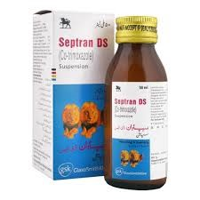
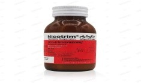
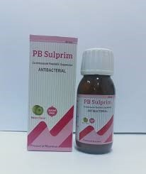
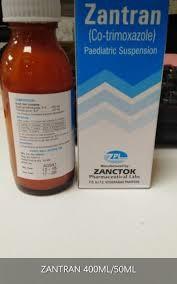
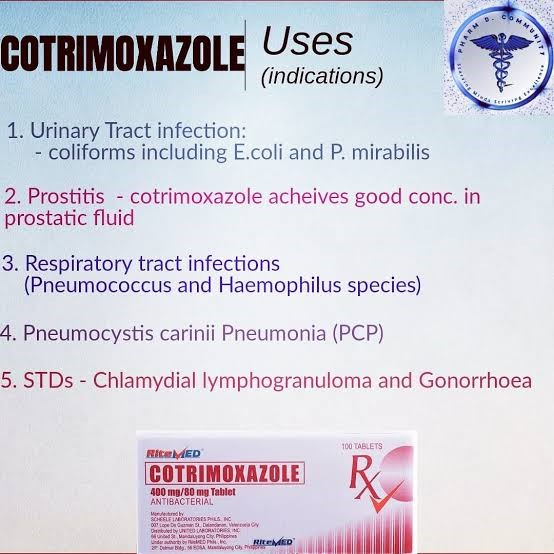
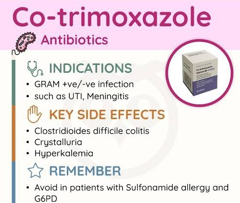

Cotrimoxazole is an antibiotic medication that combine to active ingredients sulfamethoxazole and trimethoprim. It works by inhibiting the production of folic acid in bacteria which is essential for their growth and survival.
| Sr # | Brand Name | Manufacturer | Strength | Dosage Form | Price/Unit | Images |
|---|---|---|---|---|---|---|
| 1 | Septran | GSK | 80/400mg | Suspension DS, Tab | Rs 61 - Rs 291 |  |
| 2 | Nicotrin | Ray | 80/200mg | Paeds Suspension, Tab | Rs 28.52 - Rs 302.90 |  |
| 3 | Sulprim | Share X | 80/200mg | Suspension | Rs 21 |  |
| 4 | Zantran | ZANCTOK | 80/200mg | Suspension | Rs 65 |  |
Store at room temperature away from heat and light (15-25 degree Celsius). Do not refrigerate the infection.
They, Work synergistically to inhibit folic acid synthesis in bacteria, leading to anti- bacterial effects.
Oral: rapid, almost completely absorbed (90-100%)
| Bio-Availability. | Protein Binding. | Placental Barrier. | Secreted in Milk. | Volume of Distribution. |
|---|---|---|---|---|
| Peak serum concentrations of both sulfamethoxazole and trimethoprim are attained within 1 - 4 hours. | Sulfametho xazole is approximat ely 70% and trimethopri m is approximat ely 44% bound to plasma proteins. | Both sulfameth oxazole and trimethopr im readily cross the placenta.. | Both sulfamet hoxazole and trimetho prim readily are distribute d into milk.. | Widely distributed into body tissues and fluids, including sputum, aqueous humor, middle ear fluid, bronchial secretions, prostatic fluid, vaginal fluid, And bile. |
Time to Speak, Serum: Oral (1 - 4 hours)
| Pharmacological Class | Sulphonamite antibiotic |
|---|---|
| Therapeutic Class | Antimicrobial Agent |
| Mechanism Of Action | Of bacterial DNA synthesis and produce bactericidal effect. It inhibits bacterial folate synthesis ultimately lading to inhibition |
| Spectrum (In case of antibiotic) | Aerobic bacteria and some protozoa. Inactive against most anaerobic bacteria and inactive against fungi and viruses. Spectrum of activity includes many gram-positive and -negative |
| Contraindications | Renal or hepatic insufficiency. Contraindicated in pregnancy, Neonates, acute poryphria, severe |
| Precautions | Discontinue if rash developMonitor serum potassium in those at risk of hyperkalemia. ہائپرکلیمیا کے خطرے والے افراد میں سیرم پوٹاشیم کی نگرانی کریں |
| FDA Pregnancy Class | Pregnancy risk category C |
بالغوں میں روزانہ 400/80 ملی گرام کی 2 گولیاں
Half teaspoon of 80/400 mg suspension twice daily in children.
بچوں میں دن میں دو بار 400/80 ملی گرام سسپنشن کا آدھا چمچ
960mg every 12 hours increase to 1.44mg every 12 hours in adults
Take with meals. Swallow with a full glass of water
کھانے کے ساتھ لیں۔ پانی کے پورے گلاس کے ساتھ نگل لی
Respiratory tract infection, gastrointestinal infection, Urinary tract infection, skin infection (OFF LABEL USE) Prophylaxis in HIV/ AIDS patient
Hyperkalemia, skin rash, folate deficiency, convulsions, ataxia, nausea, vomiting, respiratory actions.
PharmaGuide (A complete guide to medicines in Pakistan, 28th edition) Medscape www.drugs.com